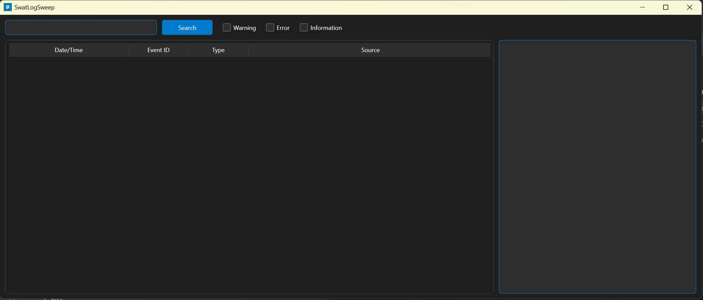
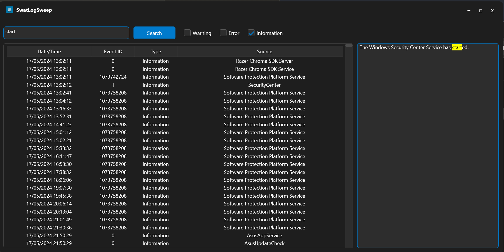

SwatLauncher
Remote Desktop Connection Manager
Version: 1.1.0
SwatLauncher is a Windows application designed for system administrators to simplify connecting to multiple RDP hosts (with the same set of credentials). It enables you to save and search a list of hosts and associated descriptions for easy RDP connection.
Downloads: 0
SHA256 Checksum:
ddbaa59b8bd1244ce397ae14c7d5f9233f4c88ab9a054382dcf8883c3e142945
Click to copy
Note: This executable is not digitally signed (yet).
Changelog
-
Version 1.1.0 (Current)
- Removed window animations.
- Added 1 second timer to shift-key press to prevent accidental deletions.
- Various bug fixes and performance improvements.
-
Version 1.0.0
- Initial release of SwatLauncher.
Screenshots


Key Features
- Secure Credential Management: Leverages Windows Credential Manager for secure RDP credentials storage.
- Active Directory Scanning: Can scan a specified Active Directory domain to populate a list of servers and descriptions.
- Hostname and Description Updates: Easy addition, updating, and deletion of hostname and description entries.
- Search Functionality: Allows searching of hostnames and descriptions.
- Double-Click RDP Connections: Instant RDP session launch with a double-click of a hostname entry.
- System Tray Integration: Minimizes/Closes to the system tray for clutter-free desktop access.
Useful Tips
- Credential Deletion: Hold shift for 1 second on the Credential Input window to delete your stored 'SwatLauncher' credentials from Windows Credential Manager.
- CSV file Deletion: Hold shift for 1 second on the Manage Hosts window to delete the CSV file entirely.
- Close the Application: Minimize/Close the application and right-click the system tray icon to exit.
SwatLogSweep
Event Log Search Utility
Version: 1.1.0
SwatLogSweep is a Windows application designed for efficient searching of Windows event logs. It provides a user-friendly interface to search the entire event log for specific keywords and presents the results in an easy-to-read format.
Downloads: 0
SHA256 Checksum:
d6a2ea23d38ec22d8240e9937a3b1eca72ff66f5754c9fb31866c3ef8e7c11b6
Click to copy
Note: This executable is not digitally signed (yet).
Changelog
-
Version 1.1.0 (Current)
- Adjusted application layout.
- Added sorting capabilities to the ListView headers.
- Detection of Admin and Standard User run modes (affects searching capability).
- Added Event ID searching.
- Version 1.0.0
- Initial release of SwatLogSweep.
Screenshots


Key Features
- Comprehensive Log Search: Search across all Windows event logs (if running in admin mode) for specific keywords.
- Efficient Results Display: Clearly presented search results for quick analysis.
- Event ID Searches: Allows for specific eventID searches.
Useful Tips
- Run As Administrator: Full event log searches require administration rights.
- Keyword Search:Selecting an event will highlight where the keyword was found within the event description.